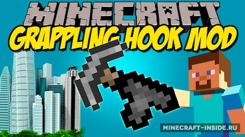

Ariente - необычный технический мод, который введет в игру новые технологии. Однако для того, чтобы заполучить их, вам придется отправиться в иное измерение и отвоевать их у местных жителей! Мод только появился и находится в стадии ранней разработки, поэтому могут встречаться баги и вылеты
Глобальная модификация добавляющая новое измерение "Сумеречный лес" - темный, заколдованный мир, почти весь покрытый лесом, в котором витает дух приключений и опасности. Здесь вам встретятся множество новых структур, мобов и боссов.
